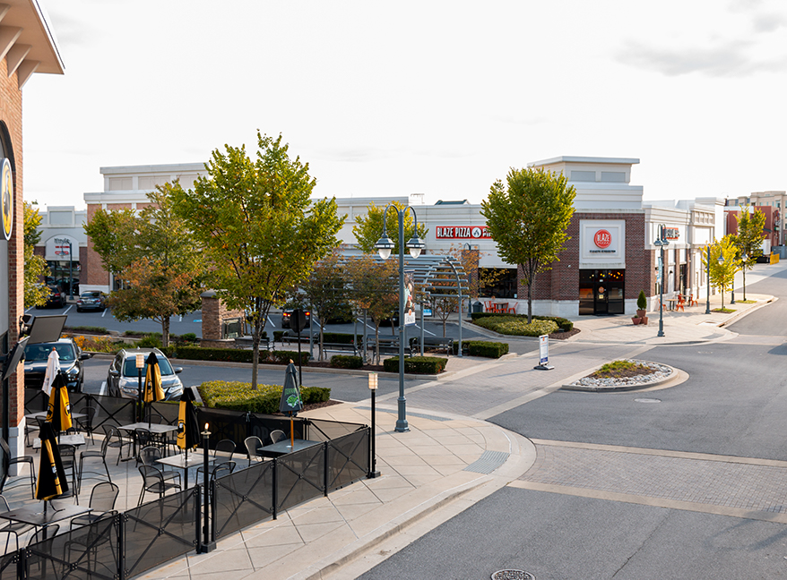

In 1811, Nicholas Snowden (1786-1831) established a grist mill aka stone flour mill (grist mills grind grain into flour) in Laurel, it was called Laurel Factory back then in recognition of its status as a mill town. The grist mill was located specifically on the fall line Patuxent River (near the upper end of Main St.), this was convenient for Snowden since the mills were powered by water. In 1820, Snowden leased the property to a man named Mr. Johnston, who converted the flour mill into a mill for spinning cotton yarn in 1824. As the town grew, more mills were founded along the Patuxent River. Blankets, woolen hats, and iron products were some of the items that these new mills produced. With Snowden’s death in 1831, the business conditions in Laurel deteriorated. However, in 1835 the Patuxent Cotton Manufacturing Company was developed in the town by Horace Capron (1804-1885) who was married to Louisa Snowden. This company constructed a large stone mill with 600 spindles and 300 looms which was a large number of resources for industrial operation during that time. The Patuxent Mill created jobs for hundreds of people living in the Main St area. Another major event that occured in the same year was that the Baltimore and Ohio railroad began direct service between Baltimore and Washington. Laurel Factory's expanding town became a major station of the B&O’s new line. In the 840s, Laurel’s first school was built and a handful of churches were created also. The railroad and river were major factors in this town’s early growth. In 1848, another cotton mill specializing in lace products, called Avondale Mill opened. The Laurel Machine Compay served both mills by utilizing steam power to create parts for machines as well as parts for the mills. Laurel Factory was thriving, but in the 1850s the town hit a rough patch. In 1853 and 1855, workers at the Laurel Machine company went on strike for shorter hours (10 hours instead of 11). Tragedy struck when a fire burned down the Patuxent Mill; the mill was the main source of income for many employees so this was detrimental for them. Luckily, the mill was rebuilt rapidly. In 1860 a census was conducted, the mill employed 40 men and 210 women, but the women were paid significantly less in comparison to the men ($9.52 for women and $25 for men). I found it interesting that the pay gap was this large, but it’s not surprising given the fact that women are still paid less than men today.
Patuxent Mill, Date Unknown Avondale Mill, 1976
Fast forward to the Civil War, this marked the end of Laurel Factory’s stage of development. During the Civil War, the mills closed for most of the Civil War. After the War and during the rest of the 19th century, the mill opened, closed, was
sold, and then reopened. Years after the Civil War, in 1873 Laurel Factory dropped the "Factory" part of its name and became simply “Laurel.” In 1914 the Patuxent Mill closed for good, and the building was abandoned by 1929. This building is
where the Laurel Historical
Society is located today. The Avondale Mill remained in business longer and took many functions over the years, it was a cotton mill, merchant mill, and a place where cloth embroidery was made. Everything went silent in the 1950s and the city
of
Laurel bought the building in 1961. In 1979 it was listed in the National Register of Historic Places. The city debated on how to best preserve and renovate the factory, but the debate ended when the building burned down in 1991. They never
decided on what to do with it and unfortunately, a group of homeless people living there accidentally set it on fire.
More of Laurel's development occured in the 20th century. In the 1920s, Laurel had a couple of upgrades including a library, a new armory, a theater, and an elementary school. During the depression of 1929, Washington Boulevard (US1) was
widened. As the automobile became a popular mode of transportation, US1 (present-day Washington Boulevard and Second Street) became the primary commercial artery. Today the four corners at US1 are being developed into housing, and shopping
centers; this area has experienced tremendous growth over the years. Laurel was a popular commercial area between Baltimore and DC; the Laurel Shopping Center opened in 1958 and the Laurel Mall in 1964.
The Laurel Centre Mall garage in 1987 and the Laurel Lakes Shopping Center grand openining in 1985. Both were located along Route 1.
Now, in the 21st century, Laurel has cemented its place as an independent small town that also serves as a suburb for its neighbors; Washington DC and Baltimore. Laurel has seen the modernization of several areas. The Laurel Mall closed in 2012 and became the Laurel Towne Centre, the Stanley Library which opened in 1967 received a major facelift in 2016. Laurel continues to grow and is home to a diverse community.
Stanley Memorial Library, 2016
Laurel Towne Centre, 2020
In 1940 Laurel’s population was less than 3,000 and by 1970 the population rose to 10,525. In 2006 the population rose to 21,945. The most recent population count is from 2018, there are 25,834 residents living in the great city of Laurel. The community in Laurel is 50% black, 24% white, 16% Hispanic, and 7% Asian. Laurel is located in PG County which is one of the wealthiest African American communities in the nation. 89.8% of the population has graduated high school or higher and 43.9% have obtained a bachelor’s degree or higher.
The image of the Towne Centre is the only image on this page that is mine.
Links to other images:
Links to sources used for research:
{kind=link}